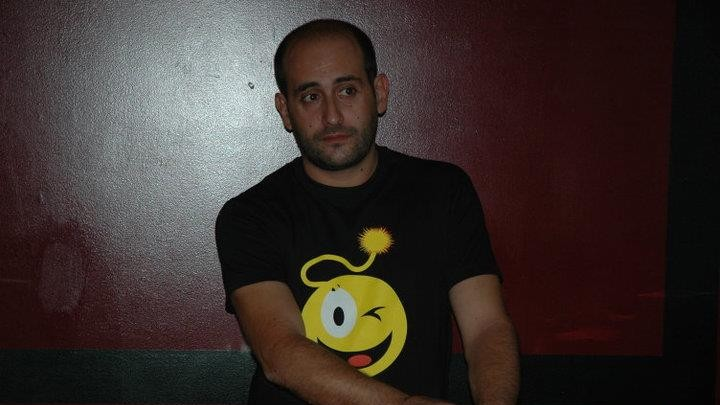

Querido tio, obrigado por estes 16 anos que passamos juntos. Foste um segundo pai para mim, e foste uma pessoa que sempre me apoiou. Não tenho palavras para te agradecer. Agradeço por tudo que fizeste por mim. Infelizmente, não pude me despedir de ti... Sempre estarás no meu coração. Infelizmente, vieste a sofrer de um cancro que te levou... Espero que continues a torcer por nós, como sempre fizeste. Sempre foste muito brincalhão, e todos nós gostavamos de ti. O teu legado será sempre eterno. Obrigado por tudo, de coração. Descansa em paz. 🤍🕊
Pessoal
1 minuto de leitua
Obrigado Por Tudo, Querido Tio
Uma mensagem especial para o meu tio que infelizmente veio a falecer no dia de hoje, 13 de Fevereiro de 2026.

Tomás Mota
30 de Novembro 2025
